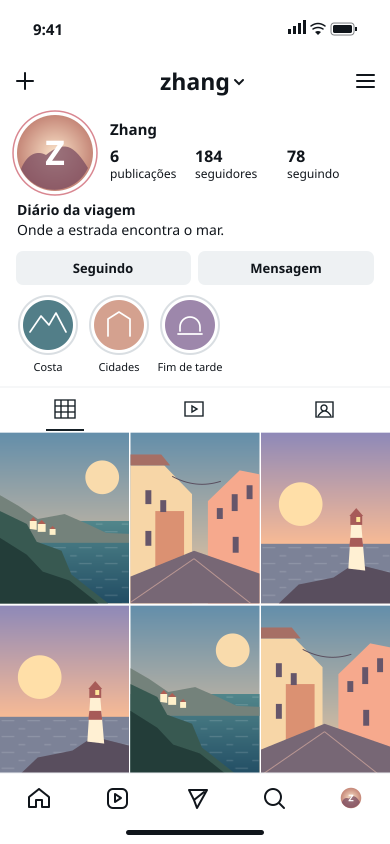

01 / 05
Um perfil que conta histórias.
Crie perfis, publicações e conversas para seus personagens.

Crie histórias que acontecem na tela de um iPhone.
Crie perfis, publicações e conversas para seus personagens.

Escreva o diálogo e escolha a hora certa para o telefone tocar.
Monte diários, lembretes e anotações dentro da história.
Inclua páginas fictícias que o leitor pode descobrir pelo navegador.
Role sobre a prévia ou escolha um app.Deslize na prévia ou escolha um app.